原文连接:https://www.cnblogs.com/0000cjw/p/11788885.html
一直在传统行业工作（早九晚五不加班），没有考虑消息中间件的性能，所以一直再用activeMQ也没有想过学习别的中间件，时间长也没什么技术上的进步，而且感觉到了
工作的麻木，所以决定学一些新的技术（其实就是为了赚钱。。。。），这几天学了RabbitMQ，刚学了一个星期不是那么了解，有说的错的地方还往多多指教，不废话
了下面进入正题。
首先，环境的搭建由于RabbitMQ是 Erlang 语言开发的所以首先要安装erlang
下载地址：http://www.erlang.org/download/otp_win64_17.3.exe
1 安装
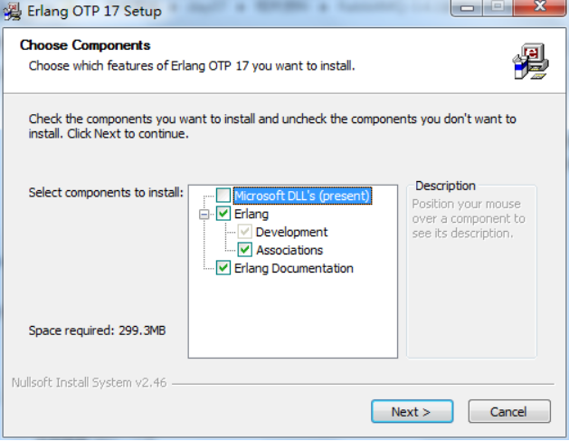
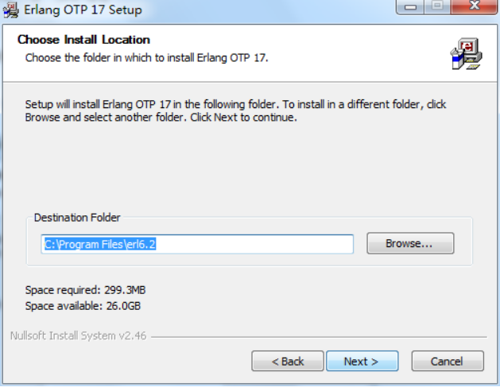
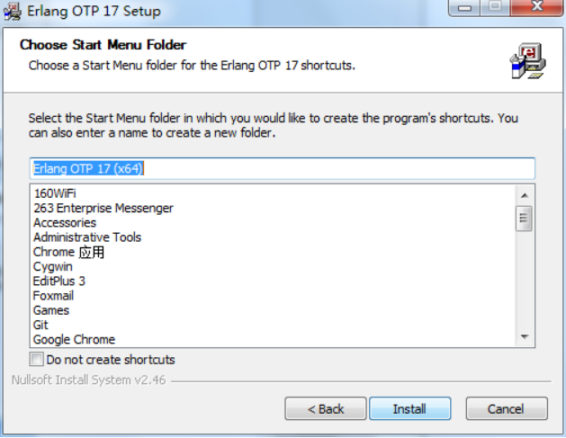
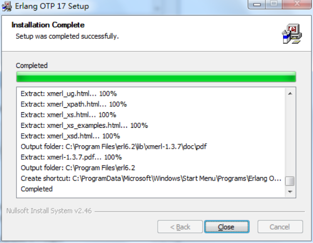
安装完成。
安装erlang之后是安装rabbitmq
下载地址：http://www.rabbitmq.com/download.html
安装和erlang差不多一直点下一步就可以了
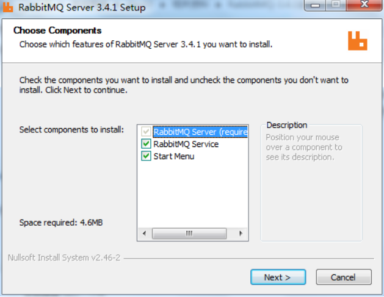
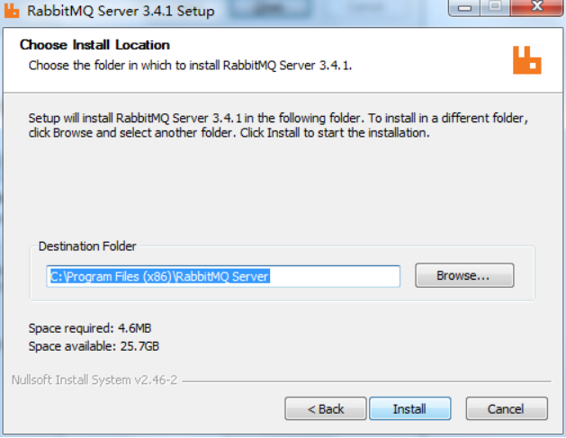
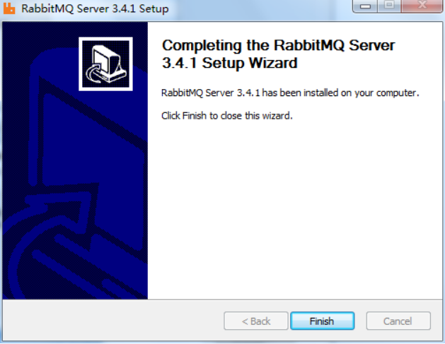
至此，rabbitMQ的环境全部搭建完成，有一点需要注意的是，安装rabbitMQ的路径中不能出现中文，所以最好使用默认安装路径就可以。
2启动
第一次启动时点击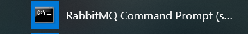
然后下面就会出现这些东西下一次打开时候直接点击start就可以了
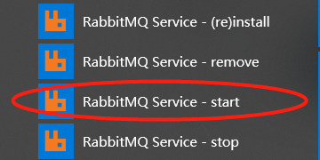
在浏览器中输入地址查看：http://127.0.0.1:15672/ ，默认账号密码都是guest/ guest
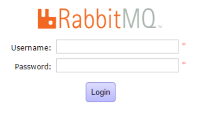
用户角色
1、 超级管理员(administrator)
可登陆管理控制台，可查看所有的信息，并且可以对用户，策略(policy)进行操作。
2、 监控者(monitoring)
可登陆管理控制台，同时可以查看rabbitmq节点的相关信息(进程数，内存使用情况，磁盘使用情况等)
3、 策略制定者(policymaker)
可登陆管理控制台, 同时可以对policy进行管理。但无法查看节点的相关信息。
4、 普通管理者(management)
仅可登陆管理控制台，无法看到节点信息，也无法对策略进行管理。
5、 其他
无法登陆管理控制台，通常就是普通的生产者和消费者。
添加新角色
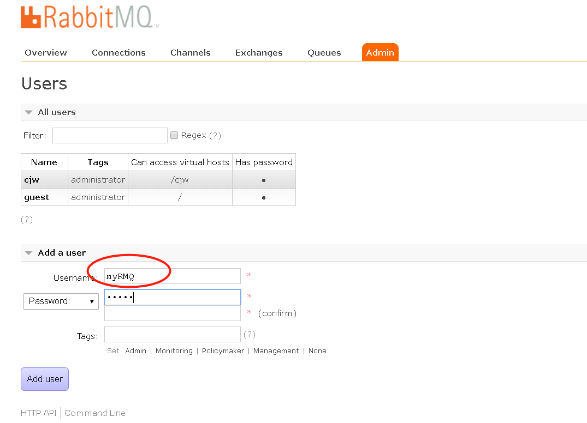
创建 Virtual Hosts

一般Name以/开头
点击myRMQ 设置权限
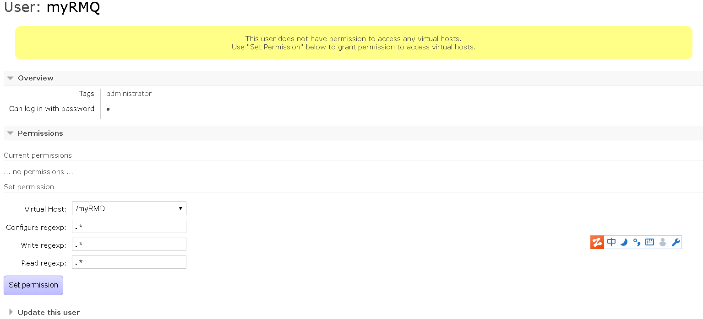
然后，点击log out退出，在用刚才创建的用户名密码登录，此时如果能成功登录系统才算是安装成功！
至于为什么不是linux版本，因为网速问题，下载centOS下了一天没下载完。。。